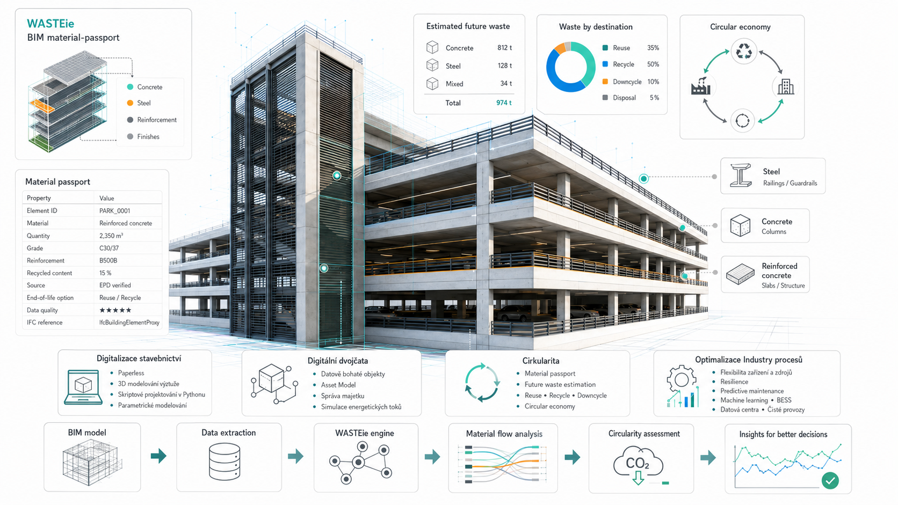

Research focus
Academic affiliation
PhD study at the Czech Technical University in Prague, Faculty of Civil Engineering, Department of Road Structures. The study programme is Structures and Transportation Engineering and the supervisor is doc. Ing. Jan Valentin, Ph.D.
Dissertation topic
The professional-discussion study is titled Circular economy in transport infrastructure: verification of the BIM method linked to prediction of demolition construction waste and carbon footprint assessment. The topic connects BIM, circular economy, material-flow prediction, LCA and Whole Life Carbon in transport infrastructure.
Scientific framing
The core argument is that BIM can act as a data backbone for an infrastructure material passport: instead of a future undifferentiated waste pile, end-of-life infrastructure can become an inventoried and classified stock of materials with potential carbon and financial value.
Methodological direction
The work formulates an integrated workflow linking BIM object data, material and waste classification, end-of-life scenarios, LCA/WLC assessment and economic evaluation. The practical aim is to support better decisions by public asset owners, designers and infrastructure managers.